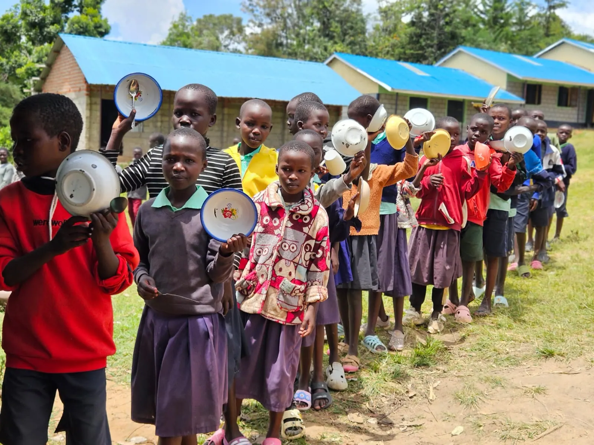
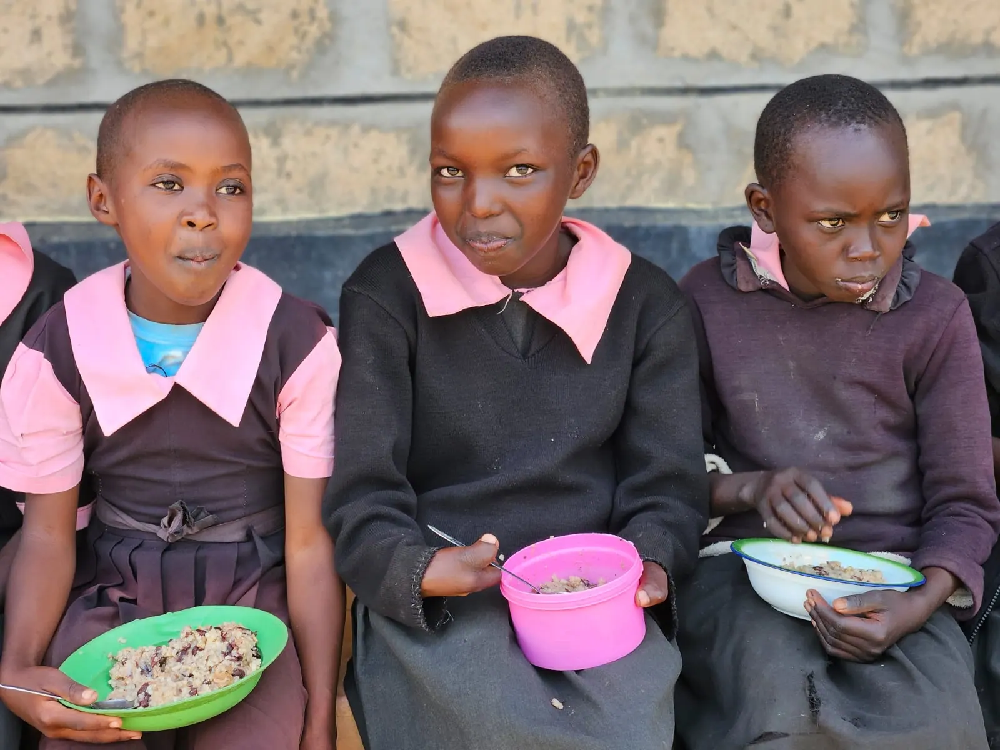

Volunteer with us.
Leadership is the willingness to serve. Join hundreds of volunteers across Kenya making hunger history, one meal at a time.

Your time is a child's meal.
Volunteers are the engine of Lishe Kwa Mtoto. From packing emergency ration bags at our Kitale depot to running nutrition workshops in schools, every hour you give translates into children being fed and communities being strengthened.
Realising our vision of a Kenya where no child learns on an empty stomach requires collaboration across every sector. Whether you are a student, a professional or a retiree, there is a role for you.
- Gain field experience in humanitarian nutrition programmes
- Build a network of change-makers across Kenya
- Receive a verified volunteer certificate for each engagement
- Travel support provided for field deployments
- See first-hand the impact your time creates
Find your role.
Choose a role that matches your skills and availability. Select one to add it to your application.
From application to the field.
Apply
Tell us about yourself, your preferred role and your availability. It takes about three minutes.
We review
We review all applications within 5 working days.
Next steps
Our volunteer coordinator contacts you with next steps for your chosen role.
Before you apply.
How long until I hear back?
We review all applications within 5 working days. Our volunteer coordinator then contacts you with next steps for your chosen role.
Do I need experience?
Not for every role. Nutrition educators receive training, and you can tell us about any relevant skills in your application.
Is travel supported?
Travel support is provided for field deployments.
Will I get recognition?
Yes. Each volunteer receives a verified volunteer certificate for each engagement.
Can I volunteer remotely?
Some roles, such as data and monitoring, can be done remotely. Others are field-based.